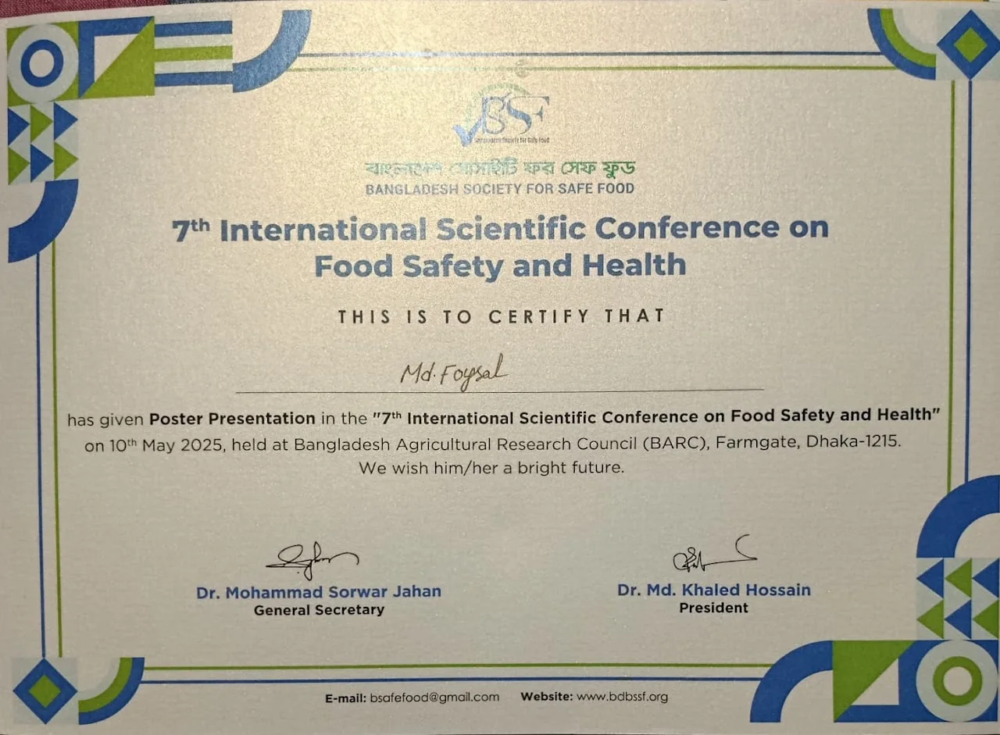
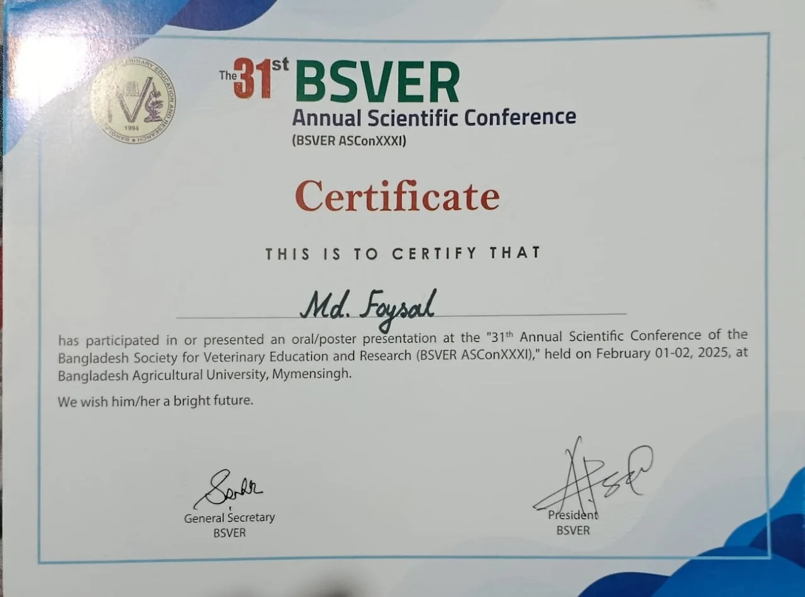
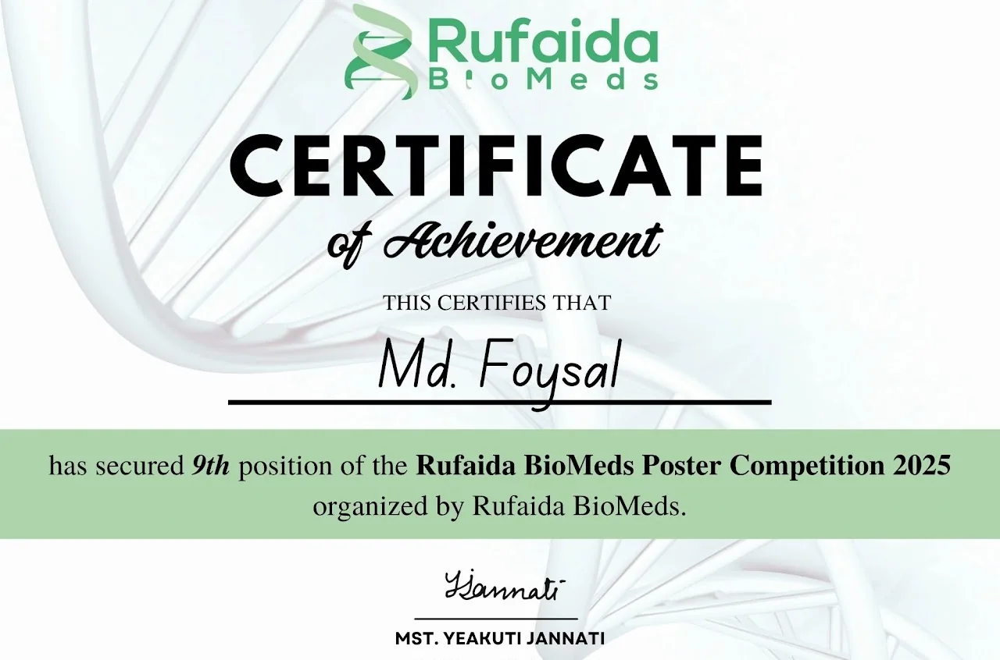
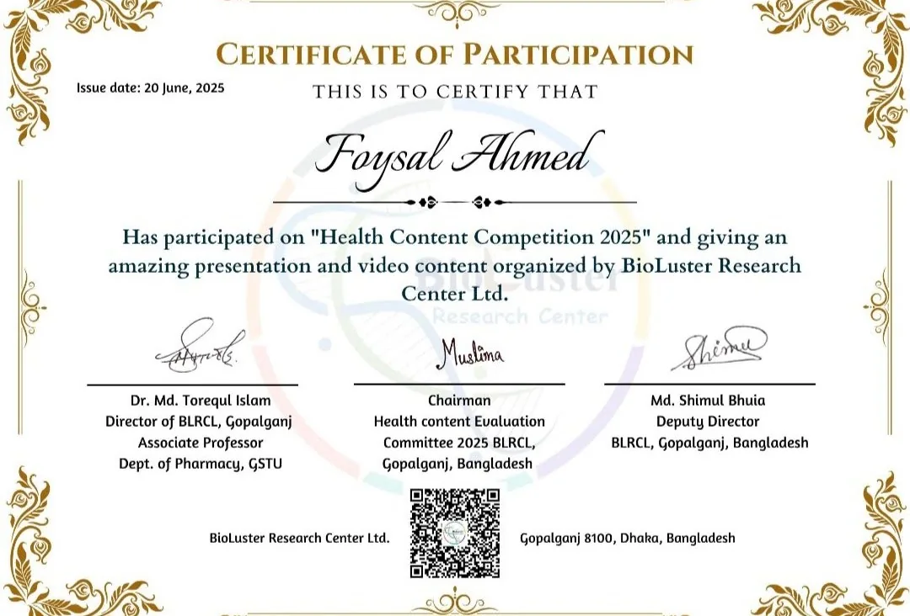

Conference2025
IAAS Asia Pacific Scientific Event — Poster Presentation
IAAS Bangladesh BAU
Scientific poster presentation, 30 May 2025, BAU.
Academic journey
My motivation, professional experience, research interests, and career goals.
Background
As a Doctor of Veterinary Medicine graduate of Bangladesh Agricultural University, I have worked on infectious-disease research related to lumpy skin disease, foot-and-mouth disease, calf ill-thrift and related animal-health challenges.
Internship placements have expanded my exposure to molecular diagnostics, veterinary clinical care, vaccine production and livestock health. Online training in epidemiology and antimicrobial resistance has strengthened my interest in the One Health framework.
My stated aim is to pursue an MPH and ultimately a PhD in infectious disease epidemiology, contributing to zoonotic-disease control, public-health research and pandemic preparedness.
Professional experience
Placements listed in Foysal’s About Me and Internship source PDFs.
Listed internships are taken from the original About Me PDF; detailed images are available for the documented placements on the Internship page.
Recognition
Real certificates from the materials supplied for this website.
IAAS Bangladesh BAU
Scientific poster presentation, 30 May 2025, BAU.

Bangladesh Society for Safe Food
Poster presentation, 10 May 2025, Dhaka.

BSVER
Conference participation / oral-poster presentation, 1–2 February 2025.

Rufaida BioMeds

BioLuster Research Center Ltd.
Participation and presentation/video content; certificate bears the name Foysal Ahmed.

Global Alliance for Rabies Control